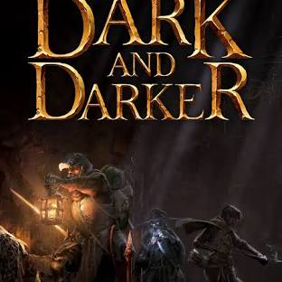

My Favorite Video Games
Home
My Favorite Video Games
Top 3 Video Games
Dark and Darker - A thrilling dungeon crawler with intense combat.
Monster Hunter - A legendary series where you hunt massive creatures. (
Official Site
)
Catan - A strategic board game for resourceful thinkers.
Game Screenshots
